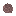

ガリウムヒ素リン（GaAsP）の板
Gallium Arsenide Phosphide (GaAsP) Wafer・アイテム・Branches
仮（まだ本物どおりでない所がある）
本当の歴史：[B-07] LED（1962年）
説明
①子ども ガリウム・ヒ素・リンの結晶の板。電気を流すと赤く光る半導体。
②学生 化合物半導体の炉で ガリウム＋ヒ素＋赤リン → 4枚。作業台で 亜鉛（p 型にする）＋アルミ（電極）＋ガラス（レンズ）と → 赤い LED 4個。
③大人 GaAs だけだと光は目に見えない赤外。リンを混ぜるほど、電子が落ちる段差（バンドギャップ）が広がり、光が赤くなる。
④ガチ 1962年、GE の研究者が GaAsP で最初の目に見える光の LED（赤）を作った。
作り方
（作り方のレシピは無い：拾う・掘る・ほかの方法）